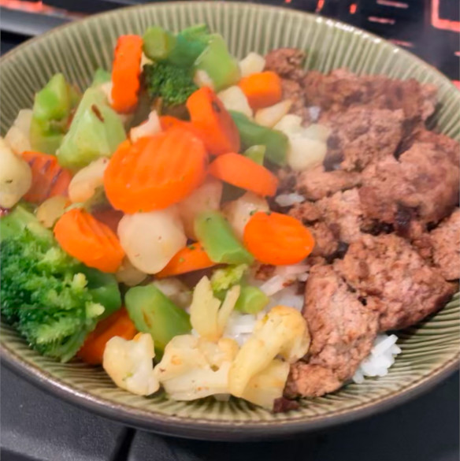

Turkey

Ground Turkey Taco meat with Rice and Vegetables
A bit of a weird recipe, but it is at least one I made on my own. For someone who likes to work out,
it is important to get the needed nutrition to be at your best peformance. This recipe is high in protien and
simple to make, making it a perfect addition to your regular meal rotation.
Ingredients
- 1 Pound of Ground Turkey
- 1 Pound of Frozen Vegetables (I am using a Normandy blend, but most will work)
- 1/2 Cup of White Recipe
- 1 Packet of taco seasoning
Optional
- Additional seasonings
- Salt
Directions
- In a small pot add water and bring to a boil. Once boiling add rice and turn heat to low until all rice is finished cooking
- On medium heat, brown your turkey in a large pan. Drain off grease and water as needed
- Once browned, break up turkey meat into desired size
- Add your taco seasoning and follow instructions on the packet. Simmer for suggested time
- Once rice and meat are complete, add rice to bowl and half of your meat into same bowl, the rest to a seperate bowl
- Add frozen vegetables to pan, stiring often to prevent burning
- Optionally add seasonings to vegetable as soon as they are thawed
- Serve vegetable to bowls and enjoy
- If done as instructed you should have enough meat and vegetables for 2 meals
Return to homepage